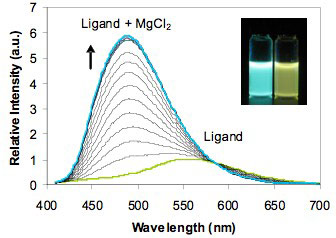

Donor-Acceptor Systems: Polarity and Metal Sensors
Many β-diketonate (bdk) ligands are fluorescent donor-acceptor (D-A) systems, the emission of which can be modulated by solvents and metal binding. This serves as the basis for polarity and metal sensing and a method for tuning bdk-containing materials properties. These systems are also explored as Mg chelator drugs for HIV and hepatitis C.

“Luminescent Donor-Acceptor Beta-Diketones as Polarity and Metal Probes” Zhang, G.; Kim, S. H.; Evans, R. E.; Kim, B. H.; Fraser, C. L. Submitted.
Antenna Effect
Diketonate ligands are good light absorbers that can transfer energy to metal centers. Materials can be excited into the bdk ligand with energy transfer to lanthanide metal centers, or into the metal center directly, as in the case of europium polymeric metal complexes invested by our group.
Anticancer Activity
There are a growing number of reports describing the cancer preventative and cancer therapeutic properties of simple dibenzoylmethane (dbm) derivatives. Certain dbm agents are UV light absorbers in sunscreens. Other dbm analogues hinder carcinogenesis and cancer cell growth in model systems. |